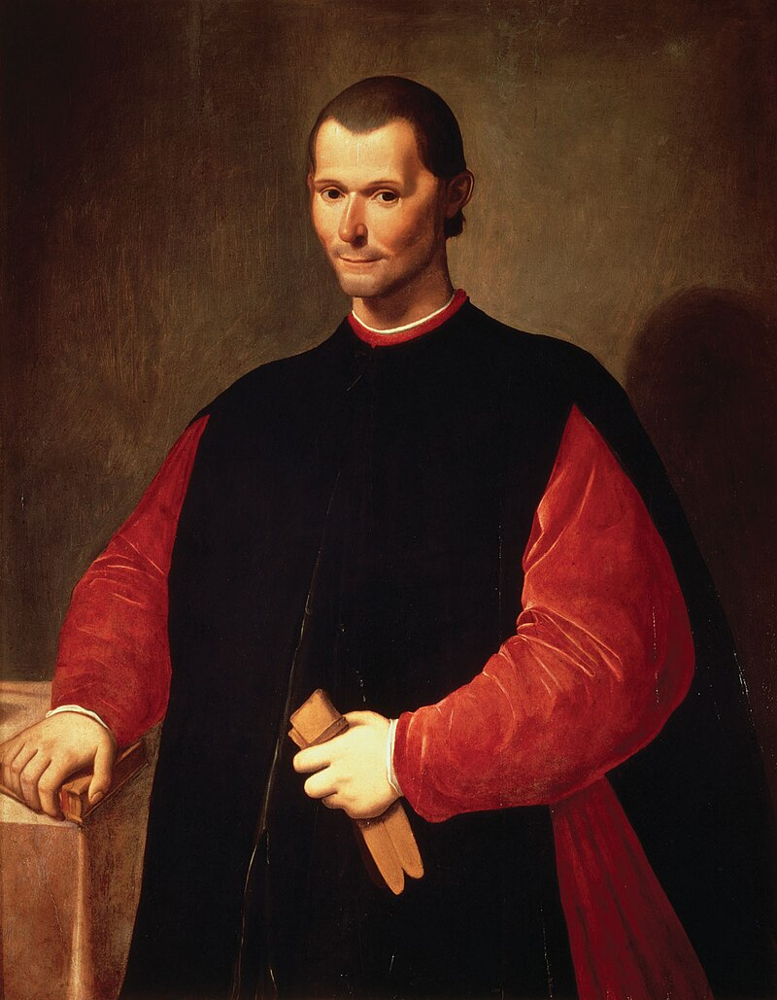

Никколо Макиавелли (краткая биография)
Никколо́ ди Берна́рдо Макиаве́лли (Макьявелли, итал. Niccolò di Bernardo dei Machiavelli; , Флоренция — , там же) — итальянский мыслитель, политический деятель, философ, писатель, автор военно-теоретических трудов. Макиавелли занимал в правительстве Флоренции несколько должностей, самая значимая из которых — секретарь второй канцелярии, отвечавшей за дипломатические связи республики. Ключевым произведением Макиавелли считается «Государь». Однако его политические взгляды куда лучше отражают «История Флоренции» и «Рассуждения о первой декаде Тита Ливия», характеризующие его как сторонника республиканских идей, а не «сильной руки государя».
Детство
Никколо Макиавелли родился 3 мая 1469 года в семье адвоката Бернардо Макиавелли, в родовом палаццо на улице виа Романа (ныне — Via Guicciardini) во Флоренции. В палаццо, кроме семейства Бернардо Макиавелли, жили и другие представители рода. Макиавелли отмечал, что его детство прошло в бедности и лишениях, но по достатку его семья принадлежала к среднему классу. Это, однако, ставило семью на более низкую социальную ступень, чем та, на которую им давало право их происхождение. Род Макиавелли имел многолетнюю историю участия в флорентийской политике, в нём были и гонфалоньеры, и приоры. Ко времени рождения Никколо род стал малочисленным и утратил влияние.
Карьера
В 1494 году Макиавелли поступил на службу Флорентийской республики. Предположительно, это была должность помощника секретаря Второй канцелярии, однако, сам факт службы не является твердо установленным. Наиболее ранние из сохранившихся свидетельств о Макиавелли-политике — два его письма. Письмо от 2 декабря 1497 года было адресовано кардиналу Джованни Лопесу (итал.)рус. и содержало просьбу признать право его семьи на спорные земли; в результате, решение было принято в пользу Макиавелли. Во втором письме от 9 марта 1498 года, отчете Рикардо Бекки, флорентийскому послу в Риме, Никколо критически характеризует действия Джироламо Савонаролы. 14 января 1501 года Макиавелли вернулся во Флоренцию из посольства к французскому королю, где он пытался уладить вопрос найма французских войск. Став главой семьи после смерти отца в 1500 году, в августе 1501 года Макиавелли заключил брак с Мариеттой ди Луиджи из старинного рода Корсини. Брак был обоюдовыгодным: родство с более знатным родом Корсини повышало статус Макиавелли, а семья Мариетты получила возможность воспользоваться политическими связями Никколо. Несмотря на свои многочисленные любовные увлечения и на то, что государственные интересы Никколо ставил выше семейных, он ценил преданность жены и доверял ей. Дважды составляя завещание, оба раза он назначал опекуном детей жену, а не мужчин рода, как было принято[30]. В 1502 году пожизненным гонфалоньером Флоренции избирается Пьеро Содерини. Макиавелли приобретает его доверие и становится его неизменным советником. В 1502—1503 годах Никколо Макиавелли был послом при дворе герцога Чезаре Борджиа, сына папы римского Александра VI, очень умного и удачливого военачальника и правителя, расширявшего войнами и политическими интригами свои владения в центральной Италии. Чезаре всегда был смел, благоразумен, уверен в своих силах, твёрд, а подчас и жесток. Макиавелли вел с ним многочисленные переговоры. В июне 1502 года победоносная армия Борджиа подошла к границам Флоренции. Напуганная республика тут же направила к нему послов для переговоров — епископа Вольтерры Франческо Содерини и Никколо Макиавелли.
Создание ополчения
Макиавелли первым в истории Флоренции смог организовать городское ополчение, с которым Флоренции удалось добиться капитуляции Пизы, отделившейся в 1494 году. В 1504 году Макиавелли предложил гонфалоньеру Содерини давно задуманный план реформировать армию и создать национальную милицию, заменив ей наемников и получив для Флоренции большую независимость от внешних сил в случае войны. Реформа была поддержана братом гонфалоньера, кардиналом Франческо («Не сомневайтесь, когда-нибудь она, быть может, принесет нам славу», писал тот к Никколо), но Содерини отклонил предложение Макиавелли из страха перед возмущением городской верхушки. В первой части «Десятилетий», написанной в 1504 году и изданной два года спустя, Макиавелли в стихотворной форме обобщил десять лет итальянской истории, уделив наибольшее внимание поражениям Флоренции из-за её постоянных надежд на помощь армий других государств и на пришлых наемников. В своих выступлениях и докладах Макиавелли постоянно критиковал «солдат удачи», называя их вероломными, трусливыми и алчными. Он хотел принизить роль наёмников, чтобы отстоять своё предложение о создании регулярной армии, которую республика могла бы лучше контролировать. Собственная армия позволяла бы Флоренции не зависеть от наемников и помощи Франции. В одном из писем Макиавелли пояснял, что единственный путь обрести власть и силу поможет принятие закона по управлению создаваемой армии и поддержании её в надлежащем порядке
Память
Слава, которую принёс «Государь», не однозначна. В своё время, когда Макиавелли обвиняли за то, какими циничными представали правители в его книге, он иронично парировал: «Я учил государей становиться тиранами, а подданных — от них избавляться». В книге есть как примеры тираний, так и мятежей против них. Главный «проект» Макиавелли — народное ополчение — при его жизни потерпел фиаско. Но после 1530 года, когда Медичи вновь вернули себе власть над Флоренцией, они воплотили идеи Никколо Макиавелли и создали надёжную призывную армию, с налоговыми, юридическими и политическими льготами солдатам под надежным правительственным контролем. И ополчение Флоренции защищало страну почти 200 лет. Книги «Государь» и «Рассуждения» писались для разных читателей, чем и объясняется противоречивость высказываний Макиавелли. Но чрезмерная самоуверенность, сочетавшаяся зачастую с резкой иронией доставили Никколо Макиавелли много неприятностей.